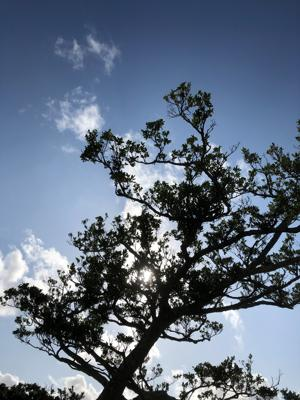
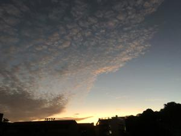
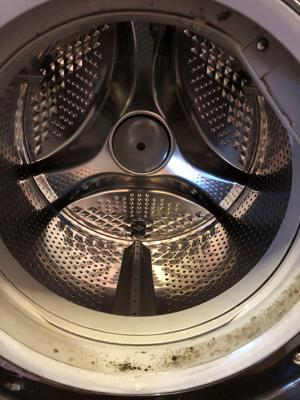

うるがいの話 ある日
最新: 洗濯機乾燥機【うるがいの話 ある日】とは 一日だけのプログです
『うるがいの話』の最新一日だけのプログで、通信料が少なく経済的だ。カニの画像をクリックすると全ての日付が載る『うるがいの話』サイトを表示します
|
|
【うるがいの話】 うるがい(ｳﾙｶﾞｲ urugai)とは、『もずくがに』の名前でとても大きくなります。 |
|---|---|
|
|
【カミマヤーの話】 猫のことを方言でマヤーといいます。カミマヤー（kamimayaa）とは、神の猫のことです。 |
|
【たながぁの音楽】 たながぁ（ﾀﾅｶﾞｰ tanagaa）とは手長えびのことで、何種類かあり大きいのは車 エビぐらいになります。 |

|
【ぶながぁの話】 ぶながぁ(ﾌﾞﾅｶﾞｰ bunagaa)とは、赤い髪の毛、赤い身体、そして身長は１ｍ２０ｃｍ ぐらい、川の蟹を食べているの目撃された。場所は沖縄県国頭郡大宜味村のと ある村僕の隣近所に住んでいる爺さんから、聞いた話です。 |
|
|
【ギーマの話】 ギーマ(giima)とは、山原の里山に咲くスズランに似た、 花を付けます。実は食べられます、 気が付くと口の周りが紫になっています。 |
2022年10月28日 (金）洗濯機乾燥機
16:16
  
いま、壊れてしまうとエライ大変になってしまうのは、毎日使う洗濯機乾燥機
である。４カ月ほど前に、ウィンドウパーカーについている紐が、ドラムの中
央にあるセンターキャップに、絡むついてしまった。それから、トレーニング
パンツの紐が同じところに絡みついてしまった。気がつくと、センターキャッ
プどドラムの間に隙間が出来てしまっている。これは、ヤバイと紐があるもの
は洗濯ネットに入れて利用している。ただ、だんだん隙間が広くなってきてい
るような・・・。家にある古い家電製品が、のきなみ壊れていくのでさすがに
不安になり、修理センターに連絡をとりみてもらった。センターキャップを交
換すれば、元に戻る（約８千円）とのこと。部品の在庫が無いので、本土から
取り寄せる（２０１４年の製品、７年を過ぎてしまったいるので在庫がるだけ
とのこと、ちなみに洗濯機乾燥機の値段は２０８、０００円）ことになった。
あと、壊れてしまうとしたらどこですかと尋ねると『乾燥機機能を利用してい
ると思いますが、乾燥の機能が製品の劣化により機能しなくなります、取り替
えるには５万以上かかることから、買い替えを進めています』と回答してくれ
た。おう、乾燥機の機能が悪くなったら買い替えることにする。今回直すとし
ばらくは、使えそうである。あ！、あと『枕を洗う人がいるのですが、ドラム
のばねを痛めるので止めてと言っています』と言われた。ヘー、枕を数回洗っ
たが。
１６時１１分 ビットコインの総資産 ￥８、６１５↓